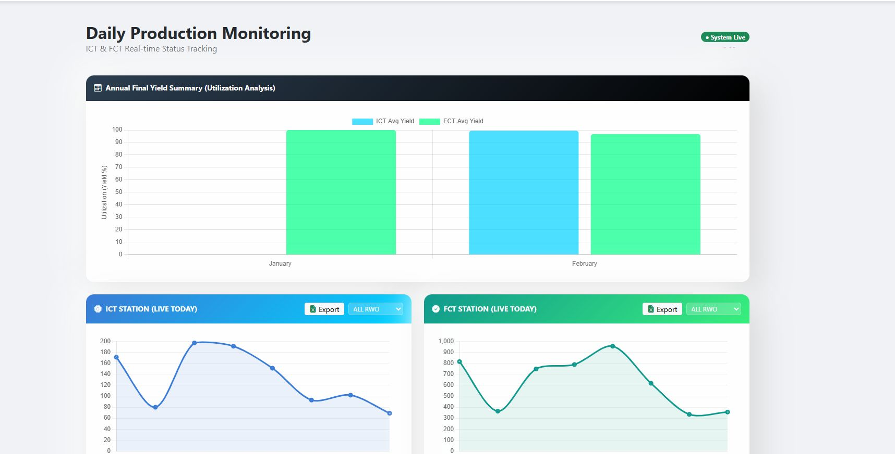
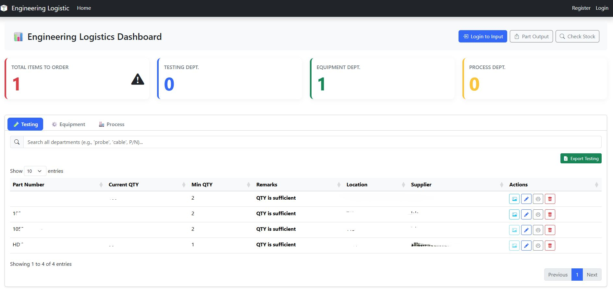
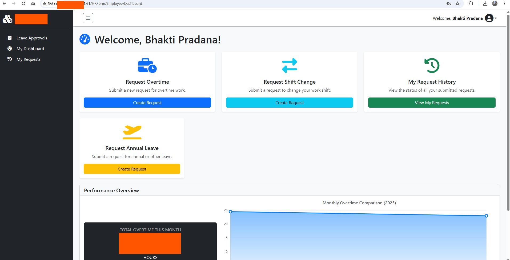
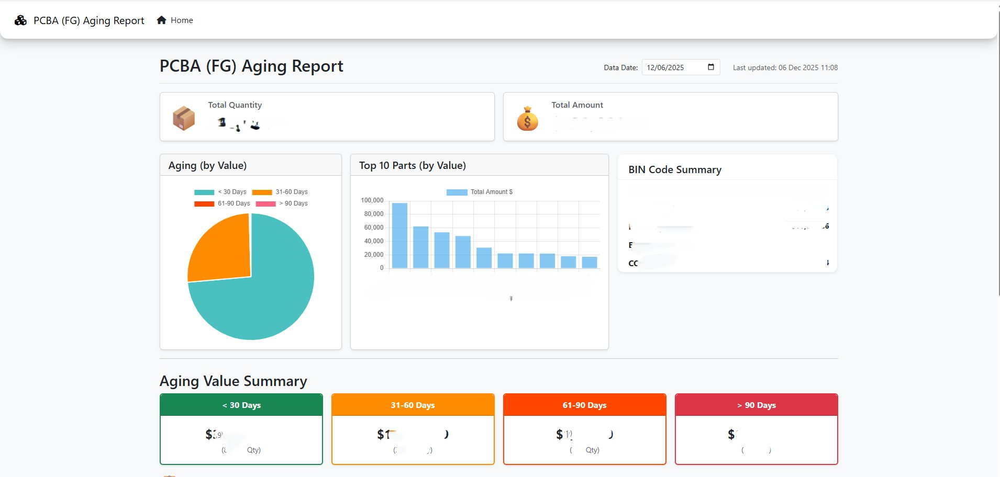
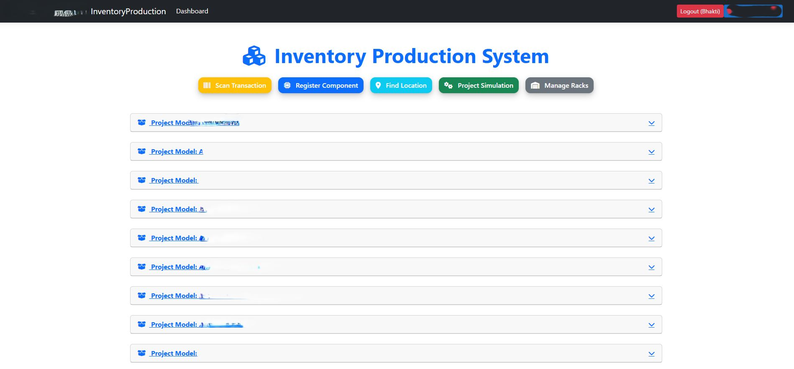
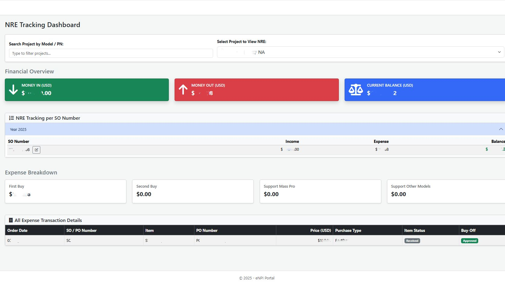
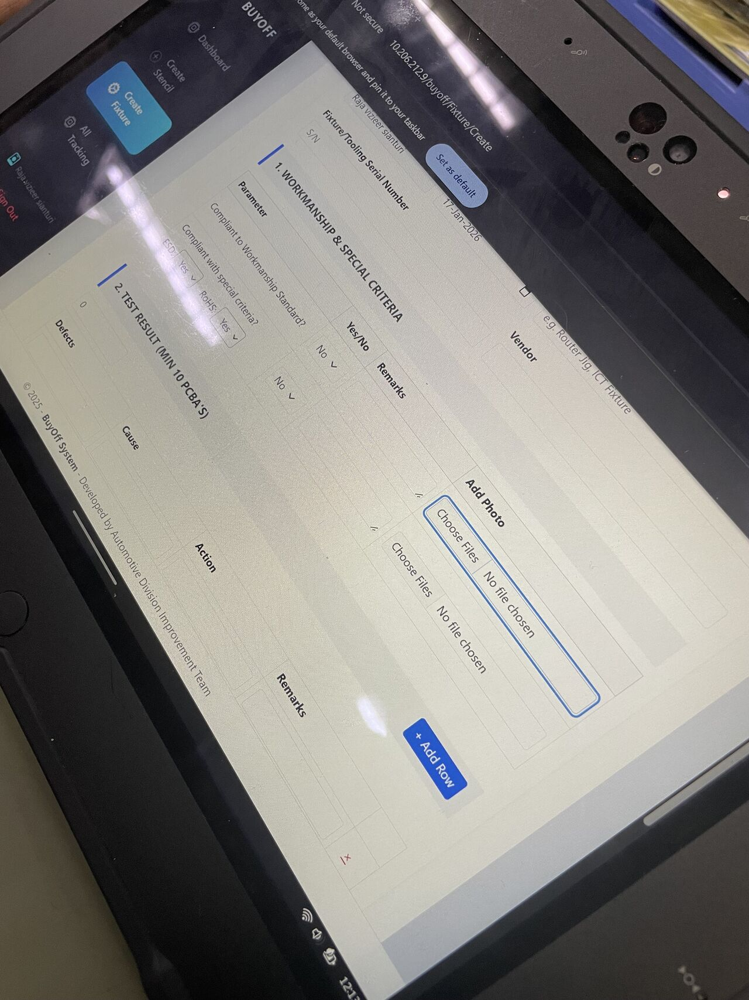

Industrial engineer specializing in manufacturing optimization and productivity improvement. I integrate Lean Six Sigma with Power BI and data analytics to drive efficiency and operational excellence.
Methodologies & Tools I Work With
With a Master's degree in Industrial Engineering, I am a seasoned Senior Engineer focused on aggressive manufacturing optimization and productivity improvement to meet core business objectives.
My core expertise lies in integrating Lean Six Sigma Green Belt methodologies with robust data analytics capabilities. This proficiency is consistently used to drive significant improvements in OEE/UPH, optimize WIP flow, and substantially reduce material waste.
Learn More About Me 👤Years Experience
Data-Driven Focus
Master's Degree
Six Sigma Certified
Focusing on Continuous Improvement, Project Management, and operational excellence initiatives.
As a coach for AIESEC Future Leaders (AFL), I support young leaders in their development by leading workshops, sharing personal experiences, and providing personalized guidance. My focus is on fostering open communication, critical thinking, and group learning. Award: Best Coach.
Engaged in leadership development program focused on enhancing both hard skills (project management, problem-solving) and soft skills. Gained valuable insights and expanded connections through group discussions and networking. Awards: Most Participant & Most Active Delegates.
Conference Speaker: AI CONVENTION 2024 - "AI for Decision Makers". Shared insights on how AI can drive informed decision-making, enhance strategic planning, and provide valuable insights into AI governance and risk management.
Instrumentation and Control Engineer: Monitored and inspected I&C erection/installation activities. Reviewed procurement documentation and site-related I&C equipment design. Provided support in claim management and documentation reporting.
Drafter Engineer: Designed and drew wiring and layout diagrams. Supervised installation and repair of electrical equipment. Created visual guidelines and detailed engineering drawings for construction purposes.

Before: Relying on manual tracking, heavy paperwork, and slower process flows.
After: Seamless, real-time digital tracking of PASS/FAIL status for all Work Orders.
Significantly reducing lead times and ensuring much higher data accuracy through a system-based approach.

A strategic initiative to fundamentally change how we manage critical machine parts with real-time inventory monitoring.
Automatically triggers alerts to departments and buyers when a part hits its minimum threshold. Resulting in zero sudden shortages and increased operational efficiency.

Successful digitalization of overtime, shift change, and annual leave request systems, shifting away from time-consuming manual paper processes.
Streamlined bureaucratic hurdles, reduced paper usage, and enabled convenient anytime-anywhere approvals with automated email reminders.

An innovative tool providing real-time visibility into product aging. Proactively monitors stock health and identifies slow-moving items.
Empowers data-driven decisions to optimize inventory turnover, reduce obsolescence risks, and strengthen supply chain resilience.

Designed to streamline how the production team manages the "supermarket" area.
Ensures better accuracy, real-time tracking, and overall operational excellence as a key part of our digital transformation goals.

Meticulously monitors both consumption and expenditure (input and output) for every project.
Automates the reporting process, providing HOD and Operational Managers with comprehensive weekly updates for better transparency and strategic decision-making.

Digitalization of the BuyOff System for Tooling, Fixtures, and Stencils.
Transitioned from manual paperwork to a tablet-based system, streamlining verification processes, ensuring higher data integrity, and real-time accessibility.
Institut Teknologi Bandung
School of Electrical Engineering and Informatics
BINUS University
Grade: Summa Cumlaude
Activities: AIESEC, Digistar Club by Telkom
Indonesia
University of Michigan
Digital Technologies and the Future of Manufacturing
Universitas Gadjah Mada
Grade: A
Politeknik Negeri Malang
Activities: Student Representative Council (DPM)
BINUS University
Indosat / Continental
Politeknik Negeri Malang
Ketua Umum Dewan Perwakilan Mahasiswa Periode 2018/2019
Dicoding Indonesia
Apr 2026Dicoding Indonesia
Apr 2026Dicoding Indonesia
Apr 2026Dicoding Indonesia
Dec 2025Dicoding Indonesia
Nov 2025Digital Talent Scholarship
Aug 2025Microsoft
Jun 2025Dicoding Indonesia
Jan 2024Dicoding Indonesia
Nov 2023Dicoding Indonesia
Nov 2023EasyLlama
Feb 2026Kennesaw State University
Sep 2024Microsoft
Jun 2024Digistar Club
May 2024Continental
Apr 2024Microsoft
Mar 2024PRODEMY
Mar 2024Continental
Mar 2024Microsoft
Mar 2024Continental
Mar 2024Continental
Feb 2024Continental
Feb 2024Continental
Jan 2024Continental
Jan 2024Continental
Jan 2024Digital Talent Scholarship
Sep 2023Oracle
Dec 2023Continental
Sep 2023ASEAN Foundation
Jul 2023AAPM
Nov 2022Panasonic
Apr 2022BNSP
Nov 2020Regen Power Pty Ltd
Dec 2019BNSP
Oct 2019